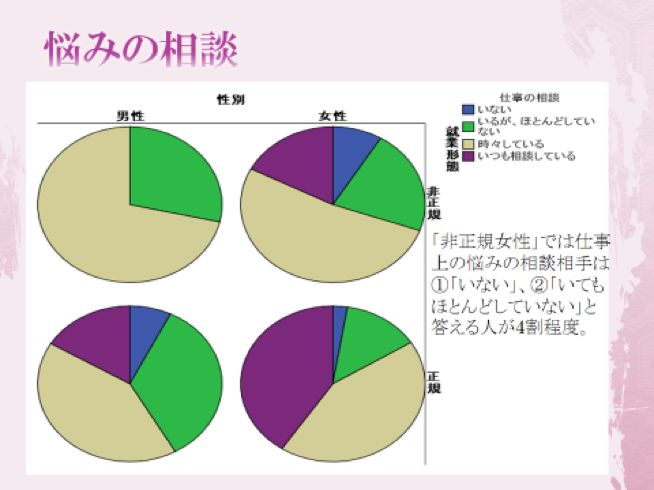
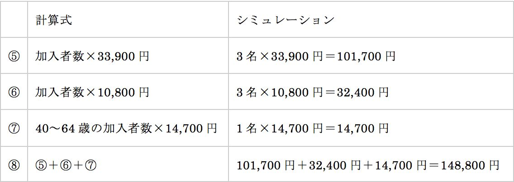

| 20代で知っておきたい介護サービスの現状 | |
| 永井隆雄 | |
| (2016) | |
今でも東北や北陸では、長男の嫁になることを嫌う女性が少なくない。恋愛、見合い、マッチングサイトなど婚活の手段は多様化し、出会いのチャンスは増えた。しかし、非婚化が進み、結婚したくても相手がいないと悩んで、地方では、国家予算で、自治体主催の出会いのパーティやイベントが頻繁に開催されている。
また、婚活活動の手段として古くからある結婚相談所も増え、その登録者も急激に増えているようだ。相談所で聴いた際に、リストにある男性に会う前に、女性が気にすることは、①自分と学歴が釣り合うか、②年収（これは一般的相場よりかなり高い）、③社会的ステイタスとそれに伴う安定性、④長男でないこと、だという。
他にあると思うが、昔は5人以上の兄弟はいたって普通だった。しかし、二人程度が一般的で、男女の兄弟となれば、親は喜ぶが、男は長男になるわけで、そこでスルーされることがあるという。そうなると、男二人でその弟、3人以上の兄弟の兄を持つ弟、あるいは両親が高齢で産まれたために、登録時点で既に両親を亡くした40歳前の男性などになってくるから、このふるいを重んじるとすれば、対象者は、上記の①、②、③より非常に高い確度で絞り込みされることになる。
また、ここで指摘しておきたいことの1つに、結婚を考える女性の期待する年収の水準は、世間の実態からすると、偏差値で言えば、65以上のものを求めており、労働経済学を専攻した私に言わせれば、現実を見ろよ、と言いたくなる。せめて偏差値で55に相当する600万で正規雇用というところまで女性が降りてこないといけないが、そんな数字では相手にされない。900は最低と希望を提示している女性が少なくない。
婚活女性たちは、30歳くらいから45歳くらいの登録者が多いわけだが、最低1000万で、住宅ローンをほぼ完済していること、などという。そんな男はほとんど売れ残っておらず、いても1%に満たないし、その男性は恋人を作っても、結婚しない独身主義だったりする。だから、マッチングしない。
上記の条件だと、首都圏、それも東京23区内と神奈川県の一部、京阪神、それと、海外赴任をしている一流企業のビジネスマン、医師、資産家、政治家などがこのような条件を満たす。しかし、このような勝ち組は結婚相談所に登録せずとも、職場や紹介、その他で適齢期より早めに結婚し、売れ残っているのはその他の条件が相当悪いか、バツイチしかいない。
その他の地域で地場産業に勤めているサラリーマンや公務員は、400-650万程度が標準的で、700万を超えるのは、40歳代半ば以降の管理職層だ。地方は地元志向が概して強いので、都会のOLさんと相談所経由で結婚することはそう多くないと思われる。
一例だが、四国の場合、非婚化や晩婚化が言われるが、ずいぶん昔から一貫して現在でも平均初婚年齢が劇的に早く18-21歳くらいで半分くらいは結婚し、親もそれが普通だと思っているらしい。その多くは大学進学者ではないと考えられるので、大卒はその少し上で結婚してしまうのだろう。
登録者はネット社会なので、全国区になっているのだろうが、こうした収入の点でもミスマッチが大きい。また、地方を中心に長男の嫁を避けるのは、その家族における責任が重いこと、姑との関係で苦労しそうなこと、そして、夫の両親の介護が早晩、自分の役割になってくることなどのようだ。
結局、婚活女性たちは熱心に動いても、結婚など本気では考えていない遊び上手な男性にエスコートされて、ネットサーフィンから、身体をもてあそばれ、ボディサーフィンされ、新鮮味がなくなれば疎遠になり、あらぬサーフィンばかりが続き、女性たちも、週末ごとに入れ替わり立ち代わり、いろんな男性にサーフィンされ、自分も波乗りするのが平気になってしまう。
ところで、介護の負担は、都会と地方でずいぶん違うし、家庭によっても違う。地方にも市街地と山間部などの差があり、一概に言えない。だから、長男の嫁なので、老親介護があるというわけではない。それに、長男ではなく、次男など別の親族が介護の中心になることもある。
少なくとも都会の場合、人口密度が高く、交通アクセスがいいので、既に訪問介護のサービスが相当普及し、充実している。訪問介護に回りやすい。
介護サービスのうち、施設での介護は3割程度で、7割程度が訪問介護サービスになっており、要介護の認定を受け、その等級に応じて、介護サービスを受けられる。制度上は地方でも市街地であれば、そのサービスは差がないほど受けやすいと考えられるが、こうしたヘルパーさんのサービスも人口密度の低いところでは、行き届きにくい。自動車を使うだろうから、自転車で回れるエリアよりも負担が大きいだろう。
また、介護だけの問題ではなく、嫁と姑の人間関係というのは古くから微妙な問題である。こうした介護サービスがあっても、夫はそのようなサービスに依存することを、素直に容認しないこともあり得る。
私の父の姉（伯母）は、なぜか福島県の宮大工のところに嫁いだ。年に1回、大阪にやってくるのだが、大阪に18歳くらいまではいたはずなのに、完全な福島弁で、テンションがものすごく高く、相手の話は一切聴かず、思いつくまま、まくしたてるような口調で、息つく間もないスピードで、しかも大声で何時間もしゃべるので、その3泊程度の伯母の訪問は毎回、苦痛だった。
そんなわけで、福島県に親戚を持つ私は、いとこに当たる人たちの話を噂であれこれと聴いたが、同じ国とは思えないと感じていた。いとこは嫁ぎ先で非常に窮屈で、人目を気にする村社会で、親戚づきあいの範囲も広く、濃密で、そこに順応すればいいが、そうならない人には、逃げ出したくなるところだろうなと思った。
伯母の夫が亡くなったのはもうかれこれ20年以上前のことだが、私は、日帰りで東京から福島市の葬儀場に足を運んで葬儀に参列した。その際、仏具が関西と違って、ものすごく派手で、赤を基調にしたものというのも驚いたが、関西では、お通夜と葬式で飲酒することは基本的にない。
ところが、東北では、献杯と言って、ビールを軽くというのではなく、日本酒まで含めてガンガン飲むという感じで、関西だと、葬式用に精進料理を食べたりするのだが、驚くことにその時は中華のコースで、ご馳走を平らげるので、これにも驚かされた。
このように東北文化圏のことは私もよく知らないが、冠婚葬祭だけでもずいぶん違うし、宮城県のはずれにある温泉地に行った際、一部は混浴と聴いていたが、宿泊していた民宿の横に200円ほどで入浴できる施設があり、ここに行くと、脱衣所まで男女一緒で、中年の女性がちょうど脱衣していたところで、私が入っても何ら動じることもなく、そもそも男女別に入浴するのが不自然とさえ思える状況に驚かされた。また、この地域では、入浴に当たり、タオルを浴槽に入れないのが本来のマナーなので、隠すこともない。
このように、東北には開放的な一面も残されている。しかし、封建遺風も多いことも事実だ。何よりも排他的であるようだ。
昭和初期は、よそからやってきた人に対する排他性のほとんどなかった大阪。そこには就業場所を求めて転居してくる人が多く、特に内地の人から蔑視されることのあった沖縄の人は大阪に働きに出ることが多かったそうだ。しかし、関西経済が徐々に勢いがなくなり、雇用吸収力がなくなると、いつ頃からかは不明だが、圧倒的に東京に人が移動してきた。
東京は、いわゆる山の手と江東6区と言われる隅田川以東では、言葉さえまるで違う。両方に住んだ経験から、山の手の人たちには、大阪や神戸の下町などとの比較だが、東京下町エリアとは顕著な違いがある。
山の手の人には、自分をよく見せたい、背伸びしてでも見栄を張りたい感情や価値観が露骨にあり、多少なりともブランド志向、学歴主義がある。そして、仲間入りしにくい面がある。今は違っているかもしれないが、30年ほど前、私が高校を出て上京してきたとき、言葉の違いなどでバカにされることもあった。なので、関西人以外の地方出身者はいつの間にか、許容範囲の標準語を話すようになり、出身地がわからなくなり、地方出身であるということも曖昧にしたがる傾向があった。
ところが、その頃、下町エリアは、親の代は北関東、東北などの人がたくさんいて、東京下町言葉をベースに地方訛りを残した話し方をする人が多く、それは何でもないことだった。物価も全く異なり、3-4割安い。学歴も中卒か、せいぜい高卒で、大卒なんていなかったので、大学生だった私はそこでは特異な存在だったほどだ。
山の手では、ターミナルとなる渋谷、新宿、池袋を除いたら、そこから郊外に走る沿線には、風俗店やスナックなども皆無ではないにせよ、ほとんどなく、パチンコ屋がある以外は、どこもほとんど同じ風景で、同じような店舗が出店していて、もちろん、そこにも優劣があるが、およそ40-60分、電車で移動してもほとんどが住宅地、また、一部大学などがあるというクリーンな街、しかし、無機質で個性のない街である。それは今も同じだ。
一方、下町エリアは、駅ごとに濃淡があり、まず、チェーンではない、個人経営の飲食店が非常に多い。山の手にはまったくない、立ち飲みなどもある。アルコールを出す飲食店の営業開始が4時頃で早い。ホワイトカラーは皆無ではないが、常磐線や総武線を例にすれば、都内で降りる人では少なく、その先にあるベッドタウンの人では勤め人が多い。
私は葛飾区に住んでいたことがある。山手線の駅である西日暮里とその周辺の駅はラブホと風俗がてんこ盛りで有名だ。そこから千代田線が出ている。北千住までの駅はどこも下町。足立区になる北千住がターミナルになるが、昔は降りても何もなかった。今でも商業集積等本当に少ない。次の綾瀬は、地下鉄の始発駅で、この沿線では一番クリーンな駅で、山の手の駅前に割と近い。それでも、少し外れると、風俗店がある。
次の亀有、金町は、コテコテの下町で、立ち飲みやもつ焼き、和洋中の飲食店、小料理屋などが多数ある。しかし、吉野家とかその手の、普通はありそうな店舗がほとんどない。これは、地場のオーナーの飲食店のほうが安いし、店主との交流で常連さんが多いからだろう。多種多様な風俗店、キャバクラ、タクシーでワンメーターらしいが、ラブホもたくさんあるらしい。
松戸からは千葉県になるここから先は、山の手の沿線からすると、格安で二流のベッドタウン。イメージがいいと思えないが、下町的な猥雑さはない。
総武線は全部の駅に降りたわけではないが、錦糸町は歌舞伎町以上の歓楽街。場外馬券売り場もある。ラブホも多い。
しかし、千葉県に入ると、一般的な住宅地の風景の駅が基本的に並んでいる。飲食店もあまりない駅も多いようだ。千葉市に行くと、歓楽街、繁華街がある。しかし、千葉市は秋葉原あたりから1時間近くかかる。相当な距離がある。
また、北千住から北へ埼玉県まで駅が並んでいる。全部に降りたわけではないが、23区で最も貧しい人たちが住む地域だけあって、物価が安い。竹ノ塚に降りたことがあるが、焼肉屋が駅の近くに10軒以上、密集しているところもあり、このエリアのどこかにかつて朝鮮部落があった名残だろう。
朝鮮部落があったということは、いわゆる被差別部落も点在していたのだろうが、足立区内を丹念に歩いたわけではないので、その辺は定かではない。
下町エリアは一旦、地方出身者が身を寄せ、その後、その周辺、そして、ある程度資産形成したら、そこから拡がる沿線に散らばっていったのだろう。下町を走る駅の周辺には工業集積はない。しかし、金町の北側にある三郷市などバスで10分ほど行けば、町工場のようなものが並んでいて、外国人労働者も多い。また、葛飾区も、京成線より南側には町工場が多いようだ。
勝間和代の実家も、葛飾区の町工場らしい。勝間は中学で思い切り勉強し、慶應女子に合格し、高校時代から公認会計士の受験勉強をし、19歳、最年少で合格している。慶應商学部在学中にアーサーアンダーセンに勤務、卒業後は、マッキンゼーに就職した。その後、外資系投資銀行を経て、フリーランスのコンサルタント、経済評論家、執筆家になり、少なくとも2回離婚し、キャリアを歩む一方で3人の子どもを産んで、その育児をしながら、働いている。喫煙も飲酒も一切せず、まめにジムでエクササイズするなど、その生き方に共感する人が女性に多い。
さて、東北や北陸、山陰など日本の封建遺風を残す地域の価値観は濃淡の差は残っているかもしれないが、こと介護に関してはこの20年ほどで飛躍的に社会保障制度として、また身近で良心的な介護サービスとして急速に提供されるようになった。
長寿化が進んだし、癌など不治の病とされた病気でもすぐに余命半年などということが劇的に減った。そればかりか、胃がんになり、その手術をしたために、思ってもみなかった多額の保険金が入り、体調は、胃が小さくなったために、生活習慣病が改善されて病気になる前よりも体調がよくなって、10年有効のパスポートを手続きし、年に2-3回の豪華な海外旅行を楽しみ、さらに別途、小贅沢な国内旅行も毎月のように楽しんだという人もいる。実は私の母がそうだ。
私は、いつまでも母が元気でいてくれたらいいと思った。母は思い残すことなく海外旅行を堪能できたので、母はあと、人に迷惑をかけないようにぽっくり死にたいと口にするようになった。それには身近な事情があった。
祖父、すなわち、母の父親は60歳を前に亡くなった。しかし、亡くなる前日まで勤めに出て、朝、気分が少し悪いから会社を休む、と言って寝込んだ。昼近くになっても起きてくる様子もないので、同居していた家族が様子を見に行くと、枕元の便箋にボールペンで、たどたどしい平仮名で「ちゅうぶ」と綴られていたという。それから医師に往診を頼んだが、危篤状態で延命措置も取りようがなかったようで、1970年代のことだが、亡くなった。脳溢血だったようだ。たぶん、日頃から血圧が高かったのだろう。
母はもちろん、家族も突然の死に、多少、ショックはあった。しかし、裕福な家庭に生まれ、若い頃は中小企業ながらそれなりの経営者、しかし、安易に保証人になって自分も連鎖して破産、その後、一介のメリヤス工の職人として勤めながら、宵越しの金を残さない生活、浴びるように酒を呑み、貧乏所帯。破産の時に母は大学を中退し、やはり不本意な工員として就労、一人でやけ酒を呑んでいて、そこで父と隣り合わせに座った寿司屋で知り合った。
そんな母が、70歳を超えてからは心配していたが、介護保険の制度と公的支援で身内の援助なく暮らせるようになった。ヘルパーさんの援助は不十分な点もあるが、どうにかなる程度にはしてくれるらしい。
そういうわけで介護とその制度は私にも身近なものと感じられるようになった。ところが、介護労働に伴う問題は、例えば、虐待など多くの問題が発生している。私はたまたま共同研究を行なった方が介護問題に取り組んでおられ、統計分析を手伝っているうちに、仕切り直してきちんとした調査をしたほうがいいと考えるようになり、その方（小野宗利さん）と小野さんへの支援を快諾してくれた西南学院大学社会福祉学科の賀戸（かど）先生の協力を得て、非常に回収率のいい調査を行なうことができた。
なお、介護は当時、6対4で既に施設外の訪問介護が主になりつつあった。ところが、その後の公的な介護サービスの充実でその比率は7割以上が施設外になっている。私が行なった調査は施設内介護施設における介護労働従事者の調査分析であることを最初に断っておきたい。
さて、介護を受ける側、また、そのサービスを受ける身内を持つ家族からの視点も重要である。訪問介護では、寝たきりか、それに近い状態の老人しかいない居宅に訪問介護サービスの人がほとんどの場合、一人で上がり込むわけで、そこに誤解や行き違い、トラブル、いわれなき言いがかりが生じてくる懸念がある。しかし、この問題は一旦、さておいて介護サービスを提供する側の、特に介護労働という側面からの諸問題に限って検討したい。
なお、私の調査したのは、高齢者介護施設で、そこに入職してくる若者（多くは介護福祉士の専門学校の新卒者）、あるいは、子育て等が一段落し、就労意識の高まった主に女性の入職者（その多くは無資格ないしは簡単に取得可能なヘルパー資格の方々）がその対象になる。また、私は、ほぼ同じ調査法で看護師、保育士についても調査を行なった。適宜、それらとも比較をし、介護労働の特質と問題点を検討し、そこから得られた所見を述べたい。
調査の対象になったのは、福岡県の博多と小倉の中間に位置する地域に点在する高齢者介護施設で25か所、合計で250名ほどの男女である。無記名自記式の質問紙で、基本的にすべて択一で答える方式で、自由記述回答はない。どの介護施設のものからかはほぼ特定化されているが、一部に特定化できていないものが含まれている。また、回収率は78%程度で、これは、調査の趣旨などを強く訴求し、協力するようにお口添えして頂いた賀戸先生（当時・西南学院大学教授：社会福祉学担当）の支援によるところが大きい。
なお、未回収が2割ほどあるのは、その程度の発生率は、このような質問紙に答えても何のインセンティブもなく、ページ数も多く、面倒だと思われたこともあるが、質問紙の中に、ずばり、介護のそごとはつづけるにしても離職したいかどうか、介護以外の仕事に転職したいかどうか、との趣旨の設問があり、提出されたにもかかわらず、施設内でとりまとめをして留め置きされていた質問紙の一部、離職意思があるとのものを抜き去り、破棄し、残ったもののみを提出した施設がいくつか散見されたことによる。とはいえ、留め置きではなく、個々に郵便で送付としていれば、回収率はもっと下がっていたと予測され、調査法はおおむね適切で、成功したと考えられる。
介護職とされる人を「介護士」など様々な名称があるが、介護職で統一しておきたい。また、介護サービスを行なう、多くのかたは２－３か月で取得可能な「ヘルパー２級」などの資格を持つ人もいる。他方、２年かけて取得する「介護福祉士」もある。しかし、介護職従事において、資格手当は3000円程度が一般的で、介護福祉士ばかりか、それよりも専門的な資格を作ってはどうかという案もあるようだが、それはほとんど意味がないばかりか、マイナスでさえある。実際、無資格者である中年女性のほうがはるかに戦力になり、定着化もしている。資格取得に時間がかかる、資格がないと入職できないことは百害あって一利なしである。
介護福祉士の資格取得をして介護職に入職するのは大半が若年層である。これに対して、簡便に取れる資格、もしくは無資格で介護に従事するのは子育てや親の介護を終えた40歳以上の中高年女性である。
実際、介護職に定着化し、主戦力になっているのは、無資格ないしは、簡便に取得可能な資格の人材で、若年層は、様々な理由から、極めて高い離職率となっている。2年かけて介護福祉士になっても、離職、または異なる仕事に多く転職してしまっているのが現状で、現場では、仮に資格を重視すると、今以上に人手不足になり、弊害が大きくなることはあっても、ほとんどプラスになることはない。介護福祉士の専門学校に入ってくる18歳の高卒の質がそう高くないということもある。この点、2年で資格取得できる准看護師の場合、資格取得の難易度の差もあるが、30歳前後で方向転換して看護師になる人も多いが、待遇もよく、男性の場合、職務満足度も高い。
さて、いくつかの観点から、介護職について検討を行なったが、その場合、正規と非正規、そして、男女の性別には最低限分けて分析することにした。これは、この4つは分けて比較すると、明らかに違いがあることから、一括して扱って検討するよりも望ましいという判断である。
まずは、次の「幻滅曲線」をご覧頂きたい。4つのグループによって、顕著な違いがあることがわかる。幻滅とは、組織行動論で著名なワナウスが考えたもので、入職前、採用後の労働条件や仕事上のやりがい、社会への貢献などについて告知され、しかし、実際の仕事における厳しさや責任感、利用者（この場合、高齢者を指す）などとの接点などで、思いのほかの出来事があった、あるいは、期待していたことで期待外れのことがあった、といったことから、期待ギャップが生じてくるのが、多かれ少なかれ、どんな職種でもある。とはいえ、介護職ほど、短期に、しかも顕著に、そのカーブが下落することはほとんどないと言ってよいほどだ。
幻滅の度合いは、期待項目15ほどについての4段階の数値を積算し、逆数にし、マイナスの値にしてグラフ化したものである。
この中で最もサンプルが多いのは、正規女性で、緑の線がその軌跡である。この軌跡は、入職後の6か月から1年未満の段階で最も低くなっている。その後、実在者の軌跡はなだらかな形で回復し、その後、緩やかな回復基調になり、10年を過ぎた段階で入職時と変わらないほどギャップがない状態になっている。これを、単純に幻滅していても1年後には回復してしまうものだ、その後は劇的に改善していると読むのは、おそらく早計であろう。というのも、1年以内に、相当の離職者が出ていて、そのために、残された実在者では、数値が改善されている可能性があるからだ。ただ、サンプルを継時的に追いかけたわけではないので、それは判然としない。
他方、非正規女性（濃紺の実線）、これも特徴的なのだが、下落はするものの、その下落の軌跡は非常に緩やかだ。10年近くかけて下落し、そこで、さらに落ち込むが、その後、再び回復していく。少なくとも非正規女性は、入職してすぐに、思ったのとずいぶん違うというギャップ感は生じていない。
正規男性（赤の一点鎖線）も特徴的である。このグループでは、幻滅曲線の落下が観察できないほど、入職初期から幻滅状態にある。そのため、多少の下落はあるが、その下落はさほど大きなものではない。ただ、入職後の1－3年の時期に向けて上昇していることである。しかし、ここで再び反転し、下落は緩やかながら、続き、10年くらい経過してようやく上昇していくという軌跡である。10年という期間は、20歳で入職すると、30歳なのだが、あくまでも他の分析とも合わせた類推なのだが、結婚や妻帯とともに育児という形で家庭形成する中、経済的に困窮し、幻滅感が生じ、離職意思が高まるのではないかと考えられる。
非正規男性に関してはサンプルが少ないので、期間の評価が難しいが、半年ないし1年から、4年にかけて回復していることが示されているが、それ以前は実在者がいないため、確たることは言えない。しかし、入職初期は期待ギャップが生じて幻滅局は下落し、離職者も出ただろうと想定されるが、このサンプルからではエビデンスがない。
＜就業形態別・性別の幻滅曲線＞
なお、介護職について4つのグループに分けて分析・検討をした。それらが、基本的に異なる傾向を持つという前提があるからである。その証左に、いくつかの質問に対して、この4つのグループに顕著な違いがあった。以下では、それを確認したい。
＜就業形態別・性別の「悩みの相談」＞

ここから明らかなのは多数派である正規女性が職場で困ったことなどがあれば、「いつも相談している」のに対して、男性では、職場での相談相手がいない、「いても時々」と本人が答えるほどで、相談する機会がないということである。これは、女性比率が高く、生活における仕事の位置づけが違うこともある。すなわち、既婚女性の仕事の場合、家計には副収入的なものとなるが、その割には地方で正規雇用に限って言うと、その報酬は十分に高い。しかし、単身の男性、あるいは、世帯の主（あるじ）としてみれば、その収入は平均的な世帯収入の半分にも満たず、これから世帯形成を考える男性には多少の是正ということでは間に合わないほど低い。
なお、5年ほど前、臨時予算で2年ほど、一人毎月3万程度の報酬に対する補填が行われたことがある。もちろん、ないよりはあるに越したことはないが、正規雇用で全国的に見て、180-250万が年収というのが相場なので、月額3万、年額36万を一時的に加算しても、加算される金額の比率は小さくないが、年収是正とは十分になりえない。そればかりか、2年間限定の臨時加算だけに、加算支給がなくなると、年収が1割以上下がるわけで、臨時加算された時期に入職した者は、減収時に幻滅を感じて余計に離職することさえあったのではないかと思われる。
なぜこのように介護職の報酬の水準が低いのかというと、それが当初はボランティアでスタートし、やがてパートなどの副業として拡がり、運営主体である、社会福祉法人や宗教法人が、介護とはかくあるべし、との観念が今も強く、高い報酬を望んで就業する場所と考えられていないことが底流にある。ただ、東京などの介護施設では、良質な介護職を安定的に獲得するために、世間水準よりは低いものの、全国的な水準からはるかに高い400-450万円程度の報酬で雇用している例もある。とはいえ、全体的に是正されていくには相当の期間を要するだろう。
また、働く目的についても尋ねてみた。働くことは、多くの人にとって、経済的な対価を得ることであろう。しかし、それ以外の側面もある。社会的参加や自己実現などそうした者もある。しかし、経済的自立を重視するかどうかは、正規雇用で180‐250万円程度という地方の山間部であれば、選択肢のない職場だったりするが、地方でも都心部、まして首都圏や関西などの都心部だと、競合する仕事に対して、例えば、病院などの医療機関のヘルパー、あるいは同種の軽作業で正規雇用などと比べて、俄然、報酬が低いのである。そうすると、経済的自立を重んじる人には、介護職は魅力がないということになる。
結果を見ると、正規男性では、経済的自由を重視していることがわかる。これに対して、非正規女性は、あまり重視していないことが、相対的な比較だが、明らかで、それが幻滅を左右する背景の１つになっている。
介護サービスにおいて高齢者への虐待が問題になっているが、1つには、看護師の場合、患者からその看護サービスを感謝されながら受けるのに対して、介護では、高齢者の多くが暴言を吐く、セクハラするということが頻発していることがある。これは、私の聴いた話だが、介護本来の食事の世話やシモの世話はすぐに慣れるものらしく、介護従事者にはさほど重大なことではないらしい。ところが、70歳を過ぎても性欲だけは若い者と変わらない老人もいて、抱き着いたり、触ってくることもあるらしく、巡回の時間に合わせて、自慰をしている老人もいるという。40歳を過ぎた女性なら、うまくあしらえるかもしれないが、20歳代もしくは30歳代前半の女性はそれがひどく苦痛になるらしい。
高齢者は家族から預かっているものなので、施設内で性行為することも禁じられているようだ。しかし、互いに配偶者をなくした高齢者が共有スペースのラウンジなどでセックスし始めたりすることもあるようで、数人の介護職が引き離すらしい。
妊娠の心配もなく、強姦したわけでもないので、施設の中には放置するところもあるらしいが、家族から預かっており、痴呆もあるので、セックスを放置できないので、引き離し、時には結合部分に手を添えて抜く、そんなことが若い人、特に女性には負担になるらしい。
中年期から勃起に不安を持つ人もいるが、70歳、80歳を過ぎてもなお、盛んな老人はいるようだ。
さて、働く目的として、経済的自立を重視するかについて尋ねた。そうすると、正規男性では、「非常にあてはまる」と「かなりあてはまる」が圧倒的に多い。正規女性でも同様に多いことがわかる。非正規では、男女ともこの比率は低めで、経済的自立のために働くという意思はあまりないようである。正規男性にとって、介護職の一般的年収は自立するには十分な額とは言えない。やや低めに見ても、全国平均で400万程度が自立可能な世帯収入だと思われる(平均では500-530万ほどとされている)。その6割程度が介護職正規雇用の標準的な年収であるが、すぐに是正されるようなものではない。
＜就業形態別・性別の「働く目的：経済的自立」＞
また、離職意思形成や抑うつ状態の先行指標になるとされるバーンアウトでは、非正規では、1-3年で多少目立つものの、サンプル数も少ないこともあり、大きく目立つ実在者はいない。他方、正規では、1-3年でもかなり目立つが、それ以上に4-9年で目立つことが明らかで、志しをもって職に臨んでも、4年を過ぎてくる頃には、待遇などもあり、その対価が見合わないという気持ちが強くなり、バーンアウト、すなわち、燃え尽きる気持ちが高まってくるものと考えられる。なお、長期勤続者にバーンアウトを示す実在者がいないのは、バーンアウトしている者がいないということではなく、そもそも、その勤続期間での実在者がいないことを意味するとお考え頂きたい。
＜就業形態別・勤続期間別のバーンアウト＞
ビジネス誌や新聞などの報道や特集を見ると、医療や年金が制度的に厳しくなっていることが報じられている。特に、医療費は、後期高齢者医療保険制度を導入してまだ10年にもなっていないが、国庫負担、すなわち税収で5割、自己負担が1割、残る4割を現役世代からの保険料収入という枠組みでの運営を考えていた。しかし、現役世代からの保険料収入が思うように入ってこないという問題が指摘されている。
その背景には、現役世代の収入減や失業もあるだろう。しかし、多数派は、非正規雇用で給与から天引きの厚生年金ではなく、国民年金と国民健康保険料の納付書を定期的に受け取り、毎月、納付する形になっている。非正規雇用が十分な収入を得ており、その支払いに十分な余力があり、また意思があれば、支払いは円滑に進み、現役世代からの保険料収入は見込めるだろう。そして、その納付は義務である。しかし、非正規雇用の多くは、ワーキングプアと呼ばれる状態にあり、生活保護レベル、あるいはそれ以下の所得水準の者も多くいると見られている。
非正規雇用の場合、仮にその年収が240万、月例で20万だとしても、3か月単位で更新だったりするわけで、来月の収入がどうなるか、わからないという人も少なくない。それどころか、6か月期間限定の雇用で、更新はない、と知らされている人もいる。日雇い雇用で月末になってみないと、自分の月収がいくらになるか、わからないという人もいる。さらに、現在は失業中、または、就業が決まっていても待機中という場合もある。そうすると、240万という年収は満額もらってそうなるのであり、そうなるかどうか、月々は見えないという人も少なくない。
そうした不安定収入の中で、毎月、15,000円あまりの国民年金（夫婦二人ならその倍額／平成27年度の金額で二人分は月額31,180 円）、個人差はあるが、25,000円から35,000円に及ぶ金額、ざっと55,000円から65,000円の金額を、水道光熱費のように払えるかというと、そうはいかないだろう。どうしても滞納しがちになるし、仮に夫婦だとすれば、減免や免除願いなどを出すことになることもあるのは想像に難くない。
国民健康保険料の計算例として、次のようなものが紹介されている。例示としては、夫の所得額が全体平均と比べてやや高い気もするが、この数字に基づいて説明をしたい。
前提条件として、夫の年収は400万、妻の年収は100万で、12歳の子どもがいると想定されている。所得に対する基準額は実際の所得から33万円（年額ならその12倍＜3,960千円＞）を差し引いた金額である。
なお、所得金額は国税庁の基準で決まっており、年収400万の場合、当該所得の20%に54万円を足した金額2,660千円が年額となる。これで計算すると、400万の基準額は2,330千円となる。妻のほうは、160万未満なので、実際の所得の40%が所得税法上の所得とみなされ、400千円となる。396千円を引くと、40千円となる。子どもは所得がなく、所得割の金額はない。
次に先ほど求めた基準額を、以下の①～④に当てはめて計算する。
ここで得られた234,741 円が「所得割額」です。
次に、均等割額は、1世帯あたりの加入者数と、介護保険料の対象になる加入者数に関係する部分となる。

ここで得られた148,800 円のことを「均等割額」という。
「所得割額」と「均等割額」が分かったら、最後に2つを合算すれば保険料の年額が出る。
これが国民健康保険料の年額となり、月額にして、31,962 円になる。
非正規雇用の世帯の場合、このような所得水準より100－150万は低いと推定されているが、この数値例で言えば、月額の支払いは国民健康保険料と国民年金で月額にして63,142円、年額で757,704円となる。500万の世帯収入の場合、その比率は15.1% になる。もちろん、これとは別に、所得税や市民税の負担があるので、500万は手取りではない。
生活費の要支払金にも優先順位がある。通信費や水道光熱費は支払いが滞ると支給されなくなる。だから、払うしかない。その意味で遅れることなく支払いがなされる。また、最低限の食料費も、贅沢は二の次にして、なし、というわけにはいかない。やめる、とすれば、外食などであろう。これに対して、国民健康保険料は、多少支払いが遅れても、健康保険証は使えるし、そればかりか、返却を求められて行政に健康保険証を返却し、対象外になっている若年層もいる。
あくまでも加入者での滞納だが、2012年度の国民健康保険の滞納率は18.1％、東京都では24.1％と5世帯に1世帯が滞納している。滞納すると、差し押さえなども行えるとされているが、滞納すると、その金額が大きいこと、また、差し押さえの対象になるような人は、差し押さえになるような給与が不安定だったり、銀行の預金も差し押さえするほどないことも少なくない。
国民年金はその支払いが義務とされている。しかし、その金額は、年収の低い人に対して相対的に大きい。例えば、正規の介護職の代表的な年収200万に対して計算すると、年収の10%近い金額になる。年収200万は、月々の手取りは13－15万程度で、もしそこから納付票での納付となると、都内なら家賃は5万ほどなので、それを払うかどうかで、毎月の可処分所得が5－7万と少ない中でも大きく変動する。
端的に言えば、不安定就労している若年層が半分を超える中、現役世代からの回収がすでに厳しくなっているのである。これについて仮に税金負担分を増やすにしても、その税金は働いている世代からの収入で、年金や健康保険料よりは回収に強制力が強い。しかし、不安定就労で、所得がなくなれば、そこから所得税を回収することは無理だ。
介護職に就いている正規女性が職務に対して満足し、幻滅度が低いかというと、それは一概には言えない。施設別に比較したところ、過去2年間で離職者ゼロという施設もあれば、逆に過去1年間に全実在者が入れ替わったという施設もあった。このように極端に異なることが明らかになった。
これは推論なのだが、同程度のきつさ・つらさの仕事をして報酬がよりよい仕事がすぐ近くにある都心部、あるいは、産業集積地帯と、自動車で1時間移動してようやく介護施設があり、産業集積地にはさらに遠いという地域が、同じ福岡県内でもある。これが熊本県になると、山間部から給油や買い物のできる地帯に出るだけで片道2時間というところもある。そうなると、年間報酬が仮に200万とすると、その水準の報酬で正規雇用の待遇で働ける場所がほとんどない施設は一旦、就業すると、離職しにくいはずである。他方、200万程度の報酬は容易に稼げる他の仕事がある、あるいは、交替勤務がないので、多少、報酬は減っても魅力的な仕事があるなら、そちらに移っていくということは十分あり得る。
また、これも推論であり、確証がないのだが、運営方針の違いがある。きつさやつらさには相応の処遇をしなければならないという現実的な感覚を持った運営者もあれば、介護という仕事に携わるのは、奉仕であり、待遇とか処遇などの労働概念を持ち込むこと自体が本来的でないという強い信念を持つ運営主体もある。実は、調査施設にお声がけを下さった賀戸先生自身が、このような徹底した福祉奉仕主義の持ち主だった。後者のような考えが間違っているとは言えないが、このような運営主体は、介護従事者の処遇改善を段階的に是正していくべきだという観念が希薄になりがちだ。
介護労働という言葉がようやくこの15年ほどになって登場し、認知されるようになった。介護は労働であり、ボランティアではないという観念がまだ日が浅く、浸透しているとも言えない。介護の仕事を離職してもしばらくして舞い戻ってくる人も多いという。しかし、それは、許容範囲の処遇条件で共働きなどの場合に限られるだろう。舞い戻った人には、介護を通じて、利用者の笑顔や満足、感謝を実感できるということがある。
とはいえ、介護従事者の生活が自立可能な状況に達しているか、というと、それは過渡期であり、かといって、大幅な報酬アップは、介護制度自体を成立することを難しくする恐れもあり、それはトレードオフの関係にある。その両者の兼ね合いがどこにあるのかが、今後の課題として残されている。